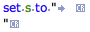

|
Invisibles |
|
Script Debugger lets you see invisible text characters, such as tabs and return characters. To see invisible characters:
-
Choose View > Show Invisibles.
-
Or, choose Show Invisibles from the contextual menu.
If the menu item is checked, invisibles are showing.
Showing invisibles is especially helpful for viewing string literals. AppleScript compiles whitespace literals into literal whitespace, which conceals their identity. For example, this script:
set s to "\t\r"
compiles like this:
set s to "
"
Now you’ve no idea what that string consists of. To find out, show invisibles.

This is particularly useful in the case of line endings, which can present a complicating factor in AppleScript, as explained here.